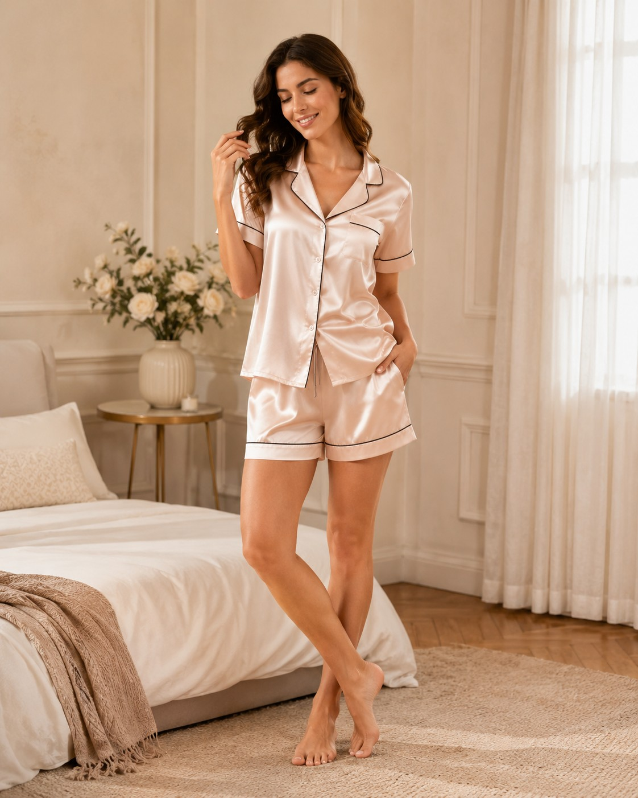
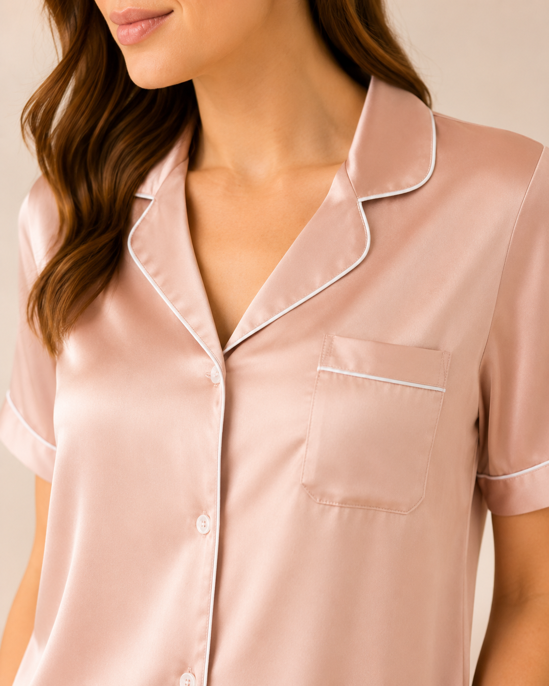
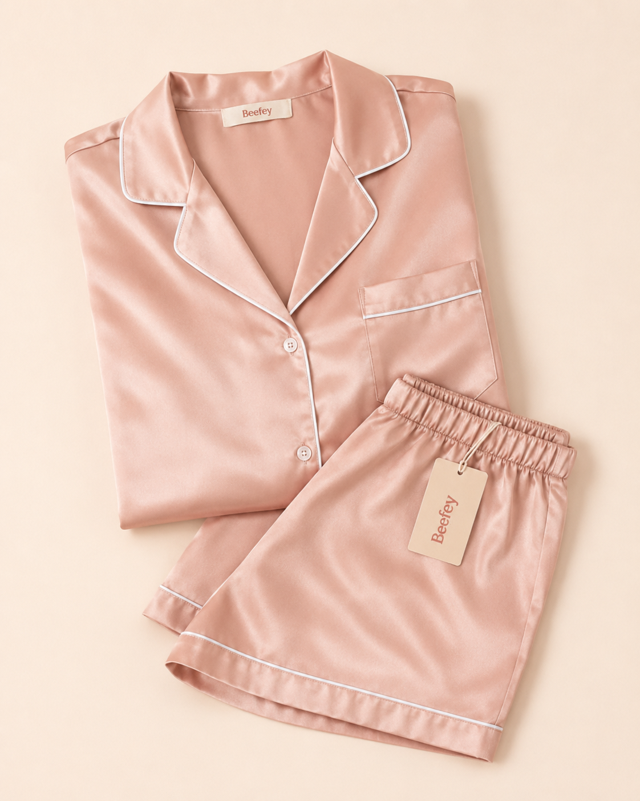

Satin sleepwear collection
Satin, shaped for color stories, gifting and private label scale.
Build a more considered satin program across long sets, camisoles, robe layers, bridal capsules and seasonal prints. Start with a silhouette, then refine sheen, piping, color, artwork and packaging with one sourcing team.

Four development lenses
Sheen · silhouette · color story · finishing details
Sheen · silhouette · color story · finishing details
The satin edit
Eight starting directionsFrom polished essentials to bridal layers and print-led capsules.
Development note: Each direction can be adapted by satin route, sheen, colorway, piping, artwork, size range, packaging and MOQ.
Material routes
| Fabric route | Use direction | What buyer should confirm |
|---|---|---|
| Poly Satin | Gloss-led bridal, gifting and premium boutique programs | Opacity, luster, hand-feel, color fastness and care requirements |
| Silk Satin | Luxury capsule collections and elevated bridal gifting | Fiber content, weight, sourcing, shrinkage and target price lane |
| Stretch Satin | Comfort-led short sets and easier fit across size ranges | Stretch recovery, GSM, fit grading and seam construction |
| Printed Satin | Seasonal resort, holiday and limited-edition capsules | Artwork scale, color approval, placement, repeat and MOQ |
| Bridal Satin | Coordinated robes, party sets and gift-ready programs | Color story, piping, trim, personalization and packaging |
B2B development scope
What the first inquiry should contain01 02 03 04
Choose a satin silhouetteSelect a short set, long set, robe layer or bridal direction.
Confirm fabric and finishConfirm satin route, weight, sheen, opacity, piping and care requirements.
Lock color and brandingConfirm color card, labels, hangtags, size stickers, packaging and personalization.
Approve sample for bulkUse the signed-off sample as the production reference before bulk scheduling.



Satin pajama set inquiry
Turn a selected satin style into a sourcing brief.
Share your target quantity, market and development requirements so our team can prepare the next sourcing steps.
Selected silhouette and reference imageCompany, quantity and target marketSatin route, color / print and pipingPackaging, personalization and launch timing